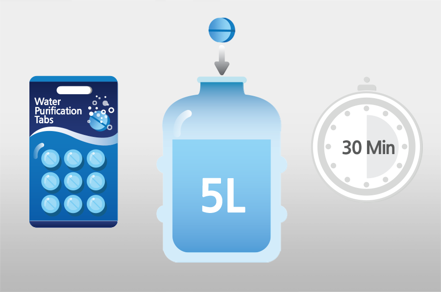
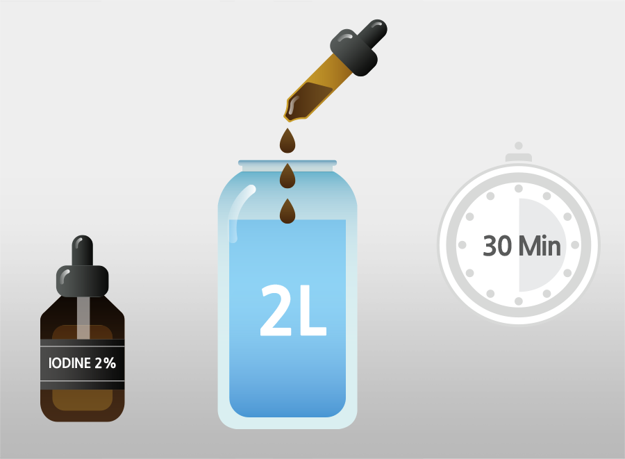

재난대비 비상물품으로 식수소독정제를 갖추어 둡니다. 제품마다 소독하는 물의 정량이 다를 수 있으므로 구입한 정제의 설명서를 참고하십시오.
대체로 5리터의 물에 한 알을 넣고 30분 놔두면 마실 수 있는 물이 됩니다. 식수소독정제는 휴대가 편리하지만, 적은 양의 물을 소독할 때는 칼로 잘라서 사용해야 합니다.

물 2리터에 2% 요오드용액 10방울을 떨어뜨리고 30분 놔두면 병균이 제거됩니다.
물이 약간 누렇고 요오드 맛이 나야 정상입니다. ‘마셔도 안전한’ 물과 ‘마시기에 좋은’ 물은 다릅니다. 의심스러운 물은 6방울을 더 넣고 30분 더 기다렸다가 마십니다.
5% 염소 표백제(‘락스’)도 식수 소독제로 쓸 수 있습니다. 물 2리터에 6방울을 넣고 물통을 흔들어 섞은 후 30분간 놔둡니다.
수영장 물처럼 희미하게 염소 냄새가 나야 합니다. 냄새가 나지 않으면 3방울을 더 떨어뜨리고 30분 후 다시 확인합니다.
요오드와 염소는 온도에 민감하므로 상온의 물이 아닌 겨울철 찬 물에는 3방울씩 더 넣고 2시간 이상 기다려야 합니다.